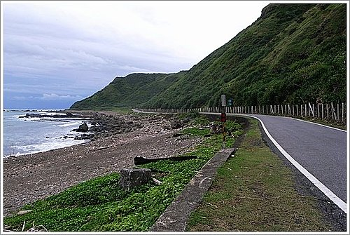
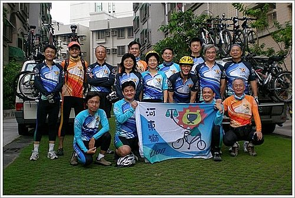
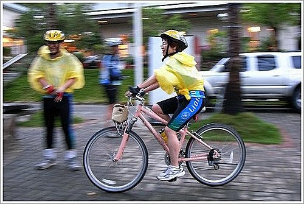
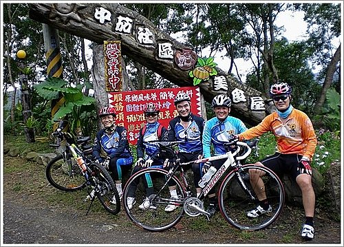
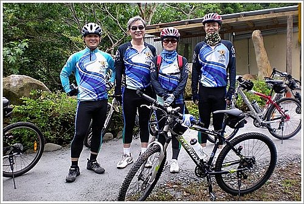
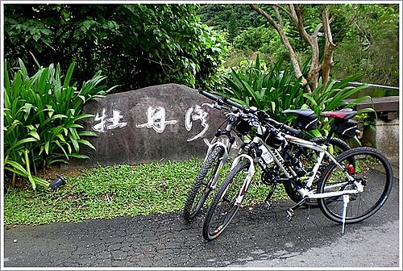

每個人不論是在年少或年長，
對快樂出遊，
總是充滿期待。
這次旭海單車之旅，
如洗三溫暖─
快樂出發、山中漫騎、休息再出發、攻頂、泡湯、享用晚餐，
其間百味雜陳，
令人回味再三！
為了這次的旭海練習曲，我在那一週內豫做了一些功課，如騎柴山練習、每天為此行禱念一遍…。又恐耽誤時辰，出發前僅淺眠三又半個小時，早晨4點即起，準備會合。

適值「立冬」後一日，天氣開始轉變，到旭海海岸時，天空烏雲密佈，在往紫灣途中老天竟狠狠地下起雨，雨和車輪上的泥土飄向身體，讓我一鼓作氣、勇往直前的蠻勁，開始有些動搖，又騎了一段，被召喚重返涼亭休息片刻，再搭補給車至紫灣。令人驚訝的是，身手輕快的院長等人，已騎過斗峭的山坡，來到紫灣。其雨中漫騎，自得其樂的神情，令人印象深刻。

柏宏兄在路上說他不當隊長，現在隊長是宗哥。的確，宗哥實眾望所歸，一路上精神奕奕，一馬當先，又為此行探勘，關注之心，不在話下。在卸車後回家的路上，仍輕快地踩著心愛的單車，令人佩服，難怪柏宏兄要讓賢。
對菜鳥如我，高士佛山攻頂是一大考驗，部分路面待修，須要牽車而行，山路連綿上升，少有下坡，期待好久才到最高點。倏忽而下，卻是清涼無比。在山上騎車，實不適合獨行，幸賴朋友相伴，才得以享受騎乘樂趣。

今年參加了幾次車隊舉辦的活動，回想起來，彌足珍貴。因有好友精心籌劃，讓我們盡情遊玩，雖然我總是在「押隊」行列，仍受益良多，體認其中之道在於─「放鬆」、「專注」、「做自己」。當然，我最想說的是─感恩啊！
